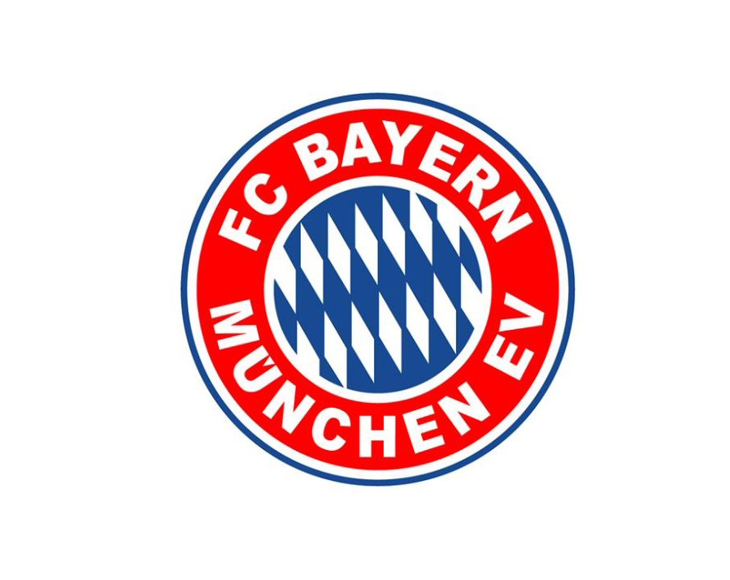
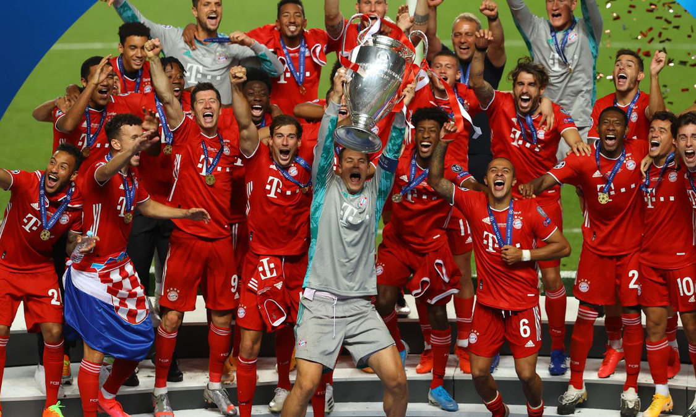
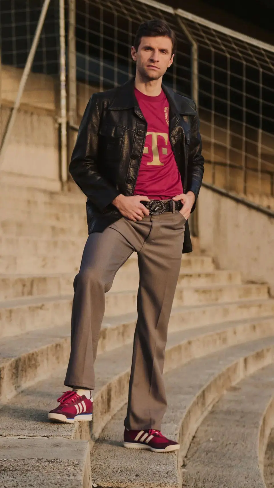
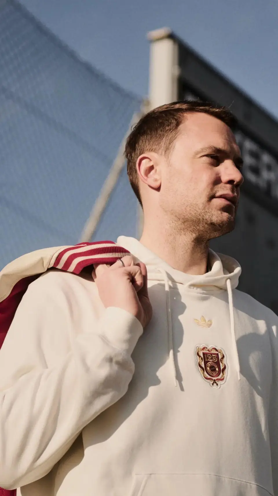

FC Bayern Munich 迎来了他的125岁生日！
历史简介
主席致辞
球衣发布

拜仁慕尼黑足球俱乐部注册协会是一家位于德国巴伐利亚州首府慕尼黑市的综合体育运动协会，成立于1900年2月27日，旗下最著名的是拜仁慕尼黑足球俱乐部
点此进入官方网站
（Fußball-Club Bayern München，简称“拜仁慕尼黑”或“拜仁”），曾于2019/2020赛季的欧洲冠军联赛中夺得冠军，同时在这一赛季，拜仁慕尼黑在主教练弗里克的带领下横扫欧洲一举获得六冠王，这也是近年来这位豪门俱乐部最大的成就。

（图为2020年拜仁球员在里斯本光明球场举起欧洲冠军奖杯）
这位欧洲豪门近日迈向了他的125周年，俱乐部主席海纳也向球迷发表了致辞： 亲爱的拜仁球迷们！ 对于拜仁来说，2025年将是特别的一年，2月27日，我们将庆祝俱乐部成立125周年。这个独特的成功故事不仅象征着球迷对拜仁的深深依恋，它代表着身份、凝聚力、传统，也意味着精神遗产和责任。弗朗茨-贝肯鲍尔、乌利-赫内斯、卡尔-海因茨-鲁梅尼格和库尔特-兰道尔等名人制定了指导原则，当你回顾这样的过去时，你也会展望未来，目标是继续在体育和球场之外树立标准。 2025年2月27日对拜仁来说不仅仅是一个日子。这一天代表着让历史鲜活的情感。这家俱乐部的创始人是有远见的人，他们战胜了对手，他们被对足球的巨大热情团结在一起，这种精神在拜仁的诞生地吉塞拉仍然围绕着我们。125年充满了激情，成功，里程碑和难忘的时刻，如果没有你们，球迷，拜仁的基石，这是不可能的。 我们一再强调，你们是拜仁的心脏。你们在球场上的声音，你们无条件的支持，无论你们身在何处，你们对俱乐部的热爱造就了今天的拜仁，一个代表着社区、力量和胜利心态的全球大家庭，现在拥有超过38.2万名会员。让我们利用这个周年纪念，不仅作为回顾的时刻，也作为继续坚持我们的价值观的理由，公平、尊重、激情、开放和宽容，特别是在这个时代。 为了一段我们认同的历史，无论是在场上还是在场外。非常感谢一直支持拜仁的球迷们，Mia san Mia。拜仁一直都不仅仅是一家俱乐部，它是一个承诺，每一个球迷，你们每一个人，都是这个独特故事的一部分。 2025年的情况也将如此。我们祝愿你们和你们的亲人2025年健康、快乐、和平，也祝愿拜仁俱乐部在新的一年取得成功！ ————赫伯特-海纳，拜仁俱乐部主席
同时，拜仁慕尼黑还发布了125周年庆典球衣
 
(图中为拜仁功勋球员托马斯·穆勒和诺伊尔身穿拜仁125周年球衣，二人刚刚完成续约)
为了一段我们认同的历史，无论是在场上还是在场外。非常感谢一直支持拜仁的球迷们，Mia san Mia。拜仁一直都不仅仅是一家俱乐部，它是一个承诺，每一个球迷，你们每一个人，都是这个独特故事的一部分。